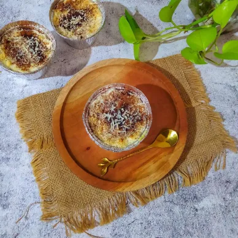

Membuat puding yang rasanya selalu berbeda, agar suasana pun selalu berbeda cerita dengan rasanya yang nikmat 🙏
Bahan-bahan :
- 1 bungkus agar-agar plain
- 600 ml susu cair coklat mocca
- 2 sdm mocca bubuk
- 1 sdt pasta mocca
- 50 gr gula pasir
cara membuat
* Siapkan panci masak kemudian masukkan gula pasir dan bubuk agar-agar ke dalamnya.
* Tambahkan bubuk mocca dan pasta mocca.
* Tuang susu cair coklat Mocca, aduk hingga tercampur rata.
* Kemudian masak hingga mendidih.
* Setelah matang, tuang dalam cetakan dan biarkan padat suhu ruang. Setelah padat barulah dikeluarkan dalam cetakan untuk di sajikan.
2. Klapertart Durian

Dessert asal kota manado yang lembut dan manis. Dengan menambahkan daging durian bikin rasanya makin enak.
Bahan-bahan :
- 150 ml susu UHT
- 250 ml air kelapa muda
- 25 gr kental manis putih
- 30 gr terigu
- 30 gr maizena
- Sejumput garam
- 25 gr gula pasir
- 2 butir kuning telur
- 50 gr margarin
- 150 gr daging kelapa muda
- 150 gr daging durian
- Secukupnya bubuk kayu manis
- Secukupnya keju cheddar parut
Cara Membuat
* Campur air kelapa muda, susu cair, kental manis, garam, terigu dan maizena. Saring, masukkan ke dalam panci.
* Masukkan gula pasir, masak sambil terus diaduk hingga mengental.
* Matikan api, masukkan 1 centong sayur ke dalam mangkuk berisi kuning telur, aduk hingga rata. Masukkan kembali ke dalam panci, aduk lagi hingga rata.
* Masak lagi sambil dimasukkan margarin.
* Masukkan daging kelapa muda dan daging durian, aduk rata.
* Tuang ke dalam cup aluminium foil setinggi ¾ cup. Lalu panggang di suhu 170°C, api bawah selama 10 menit.
* Sambil menunggu, buat meringue. Mikser putih telur dan gula pasir sampai mengembang lalu tuang terigu sambil dimikser hingga stiff peak.
* Semprotkan di atas klapertart lalu beri taburan kayu manis bubuk dan keju parut.
* Panggang lagi dengan api atas bawah selama 15 menit. Sajikan dingin lebih enak.